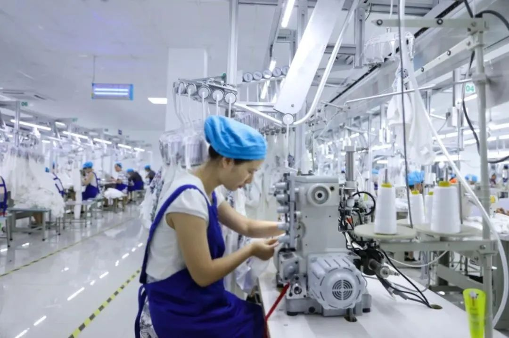
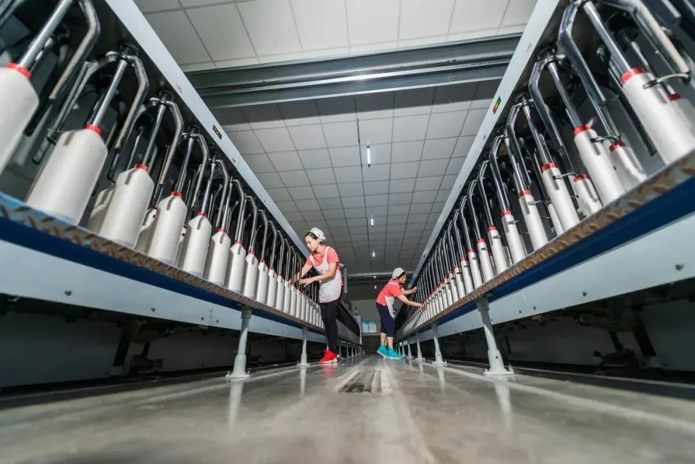
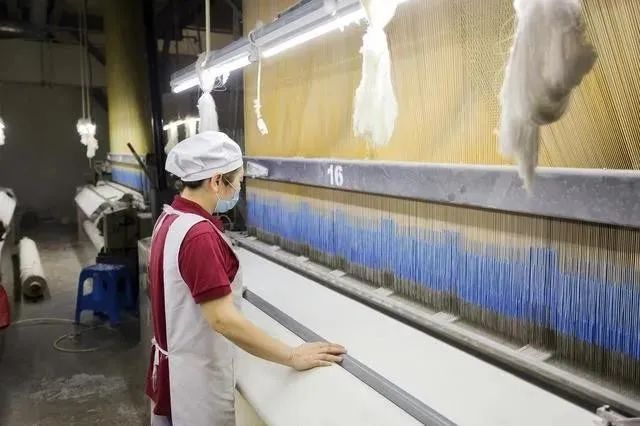
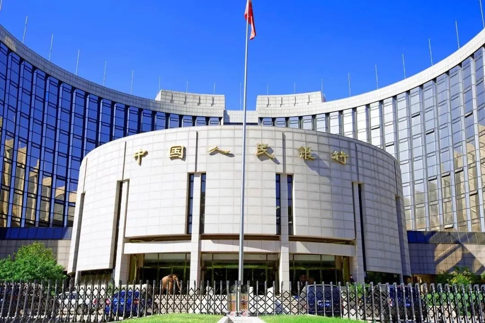
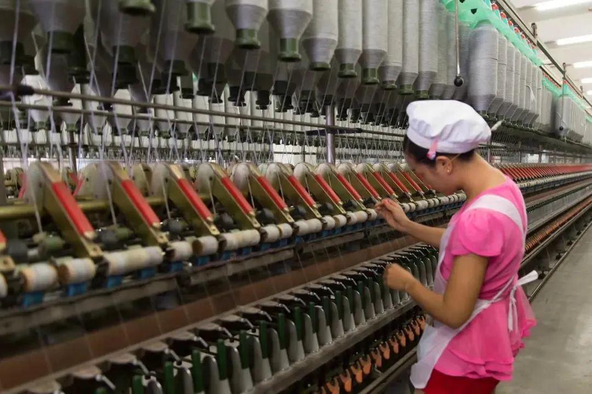
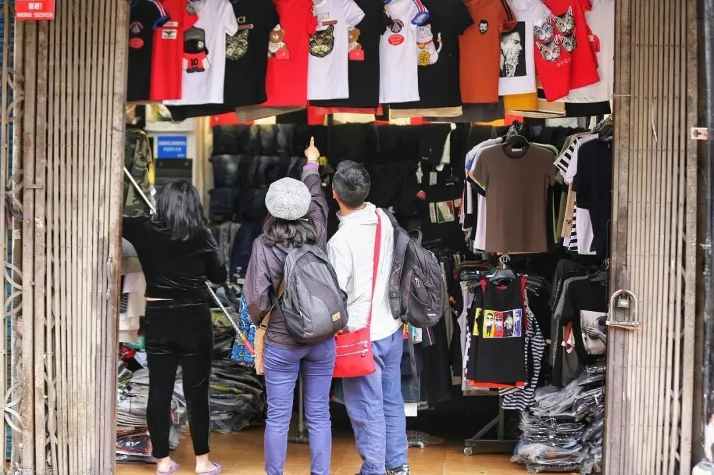

疫情虽在，是时候复工了
原文链接 备份链接 学会和疫情相处，在疫情下生存 将是我们不得不接受的选择 新冠特刊系列3「准备复工」 点击下图，线上购买 点击上图，下单新刊「*准备复工*」 主笔 | 谢九 新冠肺炎爆发一个月之后，逐渐度过了最恐慌无序的阶段，2 …
以下文章来源于态度财经见闻 ，作者默默看着你的肥猫

*************************蔷薇 | 整理*************************
孤云 | 编辑

口述：袁先生（浙江一纺织企业老板）
2月17日我们工厂开始复工，到现在十多天时间。我们到岗员工从开始的150多人，到现在300多人。
没批准复工，我睡不着；批准复工没员工，我也睡不着；现在复工，我更睡不着了。
开始我担心员工回不来，现在我担心员工回来，没活让他们干。
目前政府出台了很多助企复工复产政策，这是好事，也确实帮了企业一些忙。
但是如果想要经济复苏，我认为最重要的还是要拉动消费，而拉动消费的助力器是银行。
现在银行给企业放松贷款政策，本意是好的，但治标不治本。最直接的方法是银行停息几个月。
复工，原来我想得太乐观
我们是一家中型纺织企业。我的业务涉及国内外。主要给一些国外知名大众服装品牌提供面料，国内也是。
正常时期，我有500多个员工，一半是外地人。
2月14日，我拿到复工批复，当时我最担忧的是外地员工回不来。没有员工，我就复不了工。
我们员工安徽籍比较多，我当时准备了大巴去接他们，可是他们村里不让出来。我们提供复工证明也没用。

后来政府出台了一些助企复工政策，浙江甚至为我们企业包机、包专列去接复工人员。作为企业，我们很高兴。
刚复工时，我的到岗员工只有150多人，车间的机器运转起来了。当时我觉得形势一片大好。
我美美地预测，3月初，等我们员工全部到岗，我的公司就可以恢复正常。
目前来看，我太乐观了。
员工回来越多，我的压力就越大
现在我的员工返城问题解决了，已经到岗300多个。
但我的订单出现了问题。
我现在生产的订单，还是去年签订的国外订单。按目前员工到岗比例，再生产一个月就没有了。
而我新的订单还不知在哪里飞？
前两天，我跟国内非常知名的一家大众服装品牌的采购总负责人聊天。他们也是进退两难。

我们聊到下一步订单时，她说他们公司生产的春款还有一大批积压在仓库里。他们老板很头疼，也很无奈，说每天眼睛一睁400万元就没了。
他们企业是我公司在国内市场的主要客户，如果他们订单减少了，就意味着我今年日子不好过。
而我的员工还在陆续回来，作为老板，我又不能说，你们不要来。我也不忍心。
我心里压力越来越大。
我的员工回来越多，我的压力就越大。他们回来，我不能让他们闲着，我只好做大路货的成品，堆在仓库里。
我想帮他们，他们是我的员工。他们要生活。他们有孩子需要接受教育，他们有房贷需要挣钱去还。可我最终还是那只小小小鸟，想飞总也飞不高。
因为这意味着，我要将手里的流动资金不断地变成滞销的库存物品。
这样的状况，我可以坚持一个月，两个月，那么第三个月，我还能持否？
我好难。
好想所有问题都自己扛，可我扛不久啊
其实现在这样的企业有很多，手上没单子，或者单子不多，也要硬撑着复工。
我还算好的，目前还有订单在做，我手上流动资金也还有几千万元，有的企业手上流动资金早就没有了，如果生产的货又卖不出去，还继续生产，那真的太难了。

即使这样，我还是每天焦虑。
我采购原料，我生产库存品，我员工的工资，我每个月要付的银行利息，还有水费、电费、税收，七七八八加起来，都是钱。
就拿2月份来说，我银行利息付了50多万元，员工工资、水费电费、以及税收，七七八八加起来有200多万元。
如果500多个员工全部到岗，每个月光发工资就要二三百万元。
如果没有订单，我的货卖不出去，我手上现金还能付多少次二三百万元？
而不管你生产，还是停产，你的货卖得出，还是卖不出，银行的利息照样要交。
还好，我们厂房是自己的，不存在房租问题，有些企业还要交房租，这样一来，企业很快就会被拖垮。
所以，从我内心来讲，我现在有300个员工已经足够了。
我也想给国家减轻负担，把所有问题都自己扛，可我肩膀太窄，担子太重，扛不久啊。
银行降息只是杯水车薪，治标不治本
现在政府也在帮我们想办法，也在促进银行助力企业复工复产，但是银行能不能把政策落到实处，那还是另外一回事。
比如2月10日，浙江就出台了首批惠企政策。
其中第一条提到，“对现有存量贷款，各银行对制造业、批发零售业、住宿餐饮业等受疫情影响较重的行业，企业按不高于同档LPR利率计算2020年2月当期利息，最高给予免息政策。”
这个“最高”有可操作的标准吗？没有。
“最高”就是银行说了算。

而且这条规定就针对2月份，那3月份呢？
我公司就属于制造业。我们有享受到“最高”吗？没有。
我们2月份，几家银行加起来，原本要付利息55万左右，这次危机，几家银行加起来给我们优惠少付了5万多。
这种降息对我们公司来说，真的是杯水车薪都不到。
另外，银行给企业解决贷款，我认为这种方法治标不治本。而且银行放贷给什么企业也是有他们自己的标准的，即使放，也是有限的。
再说，有些企业，你拼命给他放贷，本来只给他贷500万元，你加大力度，给他贷了1000万元。
看起来这是好事啊，“你真的很爱我啊”，看起来，他手里的流动资金多好多啊，可是同样的，他身上背的债也多了，你银行追加的利息也多了。
问题是，他生产的东西卖不出去，他手上的钱都变成了库存，最终你银行不但没有帮到他，反而增加了他的压力。
这种情况下，你问银行“明天是否依然爱我”，显然不可能。
所以，给企业放贷只是暂时的，并不能从根本上解决问题，那是治标不治本。
把消费拉动起来，才能解决当前困境
拉动消费是解决这一困境的唯一途径。
等我们把这次疫情控制好，全方面放开，把消费拉动起来，这才是关键。
现在杭州街道上的人流越来越多，很多可以开放的地方也在开放。这是好事。
但这也只是暂时性的，即使有消费，那也是报复性的，并不会持久，待人们口袋里的余钱消费完，消费就会停滞。
这样一来，社会整体购买力就会下降，随之而来就会发生一连串的不良反应，企业倒闭，员工失业。

我们可能百分之八十的人有房贷。我们大多数家庭在买房前，已经美美地计划好，妻子挣的钱用来生活，包括子女方方面面的教育，还有衣食住行；丈夫挣的钱用来还房贷。
可是现在遇上了这样的突发疫情，夫妻有一方下岗，或者夫妻俩都没有下岗，但工资变少了，这对一个家庭来说，都是重创。
家庭的计划被打破后，还房贷都成了问题，他们还拿什么来消费？
而个人的购买力下降，直接受到影响的就是企业。
企业也和个人一样，每个月的生产也都有计划。企业每个月运转成本多少，单子怎么样。
经过这么一次危机，大家的计划都被打破了。
比如我们纺织业，老百姓手里没钱了，用在买衣服上的钱少了。生产衣服的厂家就会减少生产量，随之而来的连锁反应，就是我们提供面料的产业。
我们的订单少了，我最先想到的可能是裁员，再不济很可能也会关门。这就意味着，我们工厂的500多个员工将面临着再就业问题。
这样一来，我们的生态链就被彻底打破了，我们会进入一个死循环。
要想经济复苏，就要想办法打通整个生态链，而打通整个生态链，光靠复工是解决不了的。
真正能有力促进消费的，就是银行停息
现在唯一能拉动消费的最直接的方法是银行停息，而不是降息。任何幅度的降息，对个人和企业都只是杯水车薪。
让企业贷款利息停几个月，企业可以缓口气，老百姓就不会失业；如果再让老百姓房贷停几个月，经济慢慢就会复苏。
银行要多做雪中送炭的事，不要光锦上添花。
等消费拉动起来了，自然社会各方面都会好起来。这个时候，你让企业不复工，他们会想尽一切办法把工复起来。

现在政府的政策有了，但问题的关键是银行有没有把政策落到实处。因为各家银行的贷款担保模式不同，我们大部分企业会把贷款放在好几家银行。
比如我们公司，我就跟好几家银行有信贷关系，我们工商银行贷了2000万元，农业银行也贷了2000万元，还有建行等等。
这样一来，各家银行谁都不会先给企业免息，谁免了，就等于把自己的利益拱手让给别人了。
但从长期来看，企业不行了，整个经济都会出问题，银行也会出问题。当雪崩来临时，每片雪花都躲不过。
银行都要把眼光放远一点，抱团取暖，统一行动。如果银行不动起来，各打各的小算盘，那是很危险的，一系列的社会问题都会随之而来。
我在纺织这一行做了30多年，也曾遇到过各式各样的困难，但是办法总算比困难多。
总体来说，现在还是在往好的方向发展，我们杭州已经8天没有新增确诊病例了，政府的惠企政策也在不断增加。
我相信，只要我们和政府上下齐心，一定就能度过这次难关。


责编 | 蒋丽 lijiang@caijing.com.cn

原文链接 备份链接 学会和疫情相处，在疫情下生存 将是我们不得不接受的选择 新冠特刊系列3「准备复工」 点击下图，线上购买 点击上图，下单新刊「*准备复工*」 主笔 | 谢九 新冠肺炎爆发一个月之后，逐渐度过了最恐慌无序的阶段，2 …
原文链接 备份链接 燃财经（ID:rancaijing）原创 作者 | 孟亚娜 编辑 | 凌远川 坐电梯像“吃火锅”，吃饭像“参加高考”，红外线测体温，脚踏式按键开门神器……近日，互联网公司的花式复工火了，网友大呼，太硬核了。 图片来源 …
原文链接 备份链接 以下文章来源于等深线 ，作者蒋李超程陈郝 中国经营报《等深线》记者 蒋政 李超 程维 陈佳岚 郝嘉奇 郑州、烟台、重庆、太原报道 在富士康工作了10余年的崔永强（化名），直至2月27日，还没有结束今年的春节假期。因为 …
原文链接 备份链接 已发放的专项再贷款实际利率1.28%，比国务院规定的不高于1.6%还要低。在超速发放过程中，市场关注这些钱是否精准落地？如何平衡速度与风险？3000亿额度是否供不应求？ 图/新华 文 |《财经》记者 张颖馨 张威 …
原文链接 备份链接 参与中国欧盟商会与中国德国商会调研的577家企业中，大约一半预计2020年上半年营收会下跌超过10%，四分之一预计营收下滑超过20%。有46%的企业预计2020年的经营业绩将不及预期， …